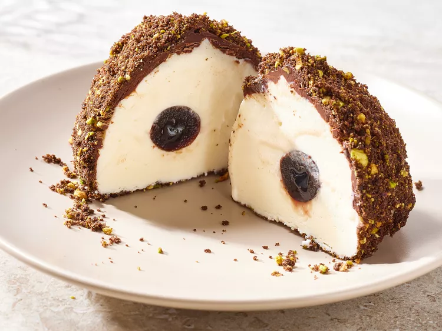

Home / Tartufo
Tartufo
Description
Tartufo is a classic Italian dessert that you can make at home. It requires some patience as there is freezing time involved. Rolling the tartufos in pistachio and cookie crumbs is extra delicious.
Ingredients
- 1 quart vanilla ice cream (such as Haagen Dazs®)
- 8 maraschino cherries (such as Luxardo®)
- 2 cups semisweet chocolate chips
- 5 tablespoons unrefined coconut oil
- 36 chocolate wafer cookies (such as Dewey’s Bakery®) (optional)
- 1/2 cup salted roasted pistachios (optional)
Steps
- Gather all ingredients.
- Let ice cream stand at room temperature until slightly softened, about 10 minutes. Line 8 small bowls with plastic wrap, leaving a 3-inch overhang.
- Using a 2 oz. (1/4-cup) ice-cream scoop, place 1 scoop of ice cream into the bottom of each bowl. Gently press a maraschino cherry into the top of each ice-cream scoop, then top each with another 2 oz. (1/4-cup) scoop of ice cream.
- Working with 1 bowl of ice cream at a time, gather overhanging plastic, wrap it up around ice cream, and gently twist it to form a ball. Freeze until ice cream is firm and set, about 2 hours.
- Place chocolate chips in a large microwave-safe bowl, and microwave on HIGH in (30-second) intervals, stirring thoroughly between intervals, until melted, 3 to 4 minutes total. Whisk in coconut oil until oil is completely melted and mixture is combined. Let cool slightly at room temperature, about 10 minutes.
- Meanwhile, pulse cookies and pistachios, if using, in a food processor until finely ground, about 15 quick pulses. Transfer to a shallow bowl, and set aside at room temperature.
- Working with 1 ice-cream ball at a time, remove ice-cream ball from freezer. Remove plastic wrap, and place ice-cream ball on a wire rack set inside a rimmed baking sheet. Pour chocolate mixture over ice-cream ball, allowing it to thinly coat the top and sides.
- If coating in cookie mixture, quickly and carefully invert chocolate-coated ice-cream ball into cookie mixture, rolling until evenly coated. Transfer coated ice cream ball to a clean wire rack set inside a large, rimmed baking sheet in the freezer. Repeat process with remaining 7 ice-cream balls, returning to the freezer after each one. Freeze until set, about 1 hour, or until ready to serve.